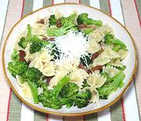

|
Pasta with Broccoli & BaconItaly - Sicily - Pasta chi Vruoccoli | ||||
| Serves: Effort: Sched: DoAhead: |
2 main ** 45 min Prep |
Pasta with broccoli is very popular in Italy. This very simple but flavorful recipe brings the flavor of bacon to the mix. It will serve 2 as a light main course or 4 as a pasta course. | |||
|
|
14 1 5 7 1 1/3 1/4 ----- |
oz cl oz oz T t t --- |
Broccoli (1) Garlic Bacon Pasta (3) Olive Oil Salt Pepper -- Garnish Parmesan |
Prep (15 min)
|